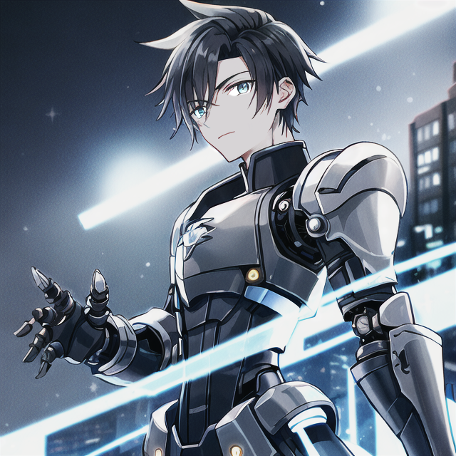

I create fan characters too!
Here are some examples:
Mettora Eisenberg
Story: Attack on Titan
Quick Lore:
Mettora is scientifically and technologically oriented. She is interested in machines, and after gaining enough fame and power, she manages to take Paradis Island to a much higher technological level than it is in the original series.
She "invents" many useful machines to help humanity fight the titans, ranging from steam-powered vehicles to airships and more. She establishes a team of engineers, working closely with the Scout Regiment,
and earns the title of "Head Engineer of Eldia".
Mettysan Akaboshi
Story: Demon Slayer
Quick Lore:
Mettysan was an average human who tried to become a celebrity, but was unsuccessful. One night he was cornered by a group of street thieves.
They would have killed him, however they were themselves killed by a passing demon Douma. He offered to turn him into a demon as well.
Mettysan accepted this offer, and his Demon Blood Art soon evolved and connected with a revolutionary new invention, the radio.
That's how he got the title "Radio Demon". Still, he wasn't looking for power among the demons, and thus escaped the attention of both Muzan and the Demon Slayers.
It was only after the demon Gyokko was killed that Muzan turned his attention to him and offered him the vacant position of Upper Five moon.
Maviel
Story: Inheritance Cycle
Quick Lore:
Maviel is the youngest of the Meloria, an ancient star-born race. They are a race of immense power, harnessing the primal energy of the universe, allowing them to shape reality itself to their whims.
However, they have realized that for reality's continued evolution, they must vanish from the scene and become mere observers, quietly safeguarding its progress from within the shadows.
Maviel was born after this, and was the only one of the Meloria who did not get a chance to fully enjoy his powers. Despite having lived for over millennia, he still has a childlike playful nature due to the slow maturation of his race.
So one day he breaks the oath of non-interference and sets out to Alagaësia with the intention of playing the adventures that he has only been allowed to observe until now.
Matarael Nistar (Removed)
Story: Fullmetal Alchemist
Quick Lore:
Matarael (Matteo for short) suffered the same fate as one of the main characters. He lost his body in a tragic accident and would have died if he had not been saved by an alchemist who connected his soul to a metal vessel.
Although he was originally bonded to ordinary armor, his blood rune was later removed from it and inserted into a new, automail-powered humanoid body. This new form was a dream come true for him.
It had the benefits of an inanimate mechanical object, such as immortality, significant strength, and no need to rest or eat, but it was also enhanced to have the additional senses of the human body,
such as smell, better eyesight, and even taste. However, due to automails and advanced mechanisms, the soul was not enough of a power source, so a battery had to be added. Still, Matteo claims that this body suits him better than his original one.
